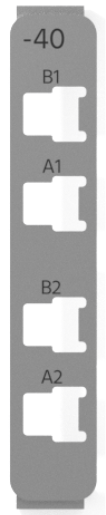

-40 Pin Mapping
-40 Pin Mapping — Reference information about the I/O interface extension front
connector
Front Plate

The -40 I/O interface extension provides two A2B interfaces on the front with a
separate upstream and downstream port.
Pin Mapping -40
![[Note]](images/note.png) | Note |
|---|
In case of a second -40 connected to the same Configurable I/O, the Interfaces
are A2B3 and A2B4 |